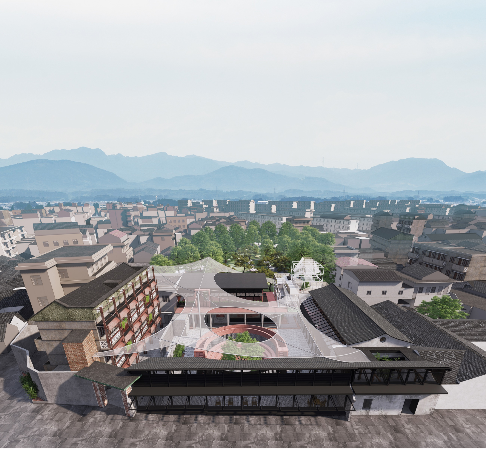

01
抵达 / 游客中心
克制的体量贴合村落尺度，轻盈构架向天空延伸，成为抵达时的第一处坐标。

村落公共空间的再编织
项目概述
不是一次覆盖，而是一场接续。
方案保留原有屋架、灰砖和坡屋顶的时间痕迹，将游客中心、民俗文化客厅、开放剧场与入口建筑嵌入既有肌理。连续的廊道与轻质棚架穿过新旧空间，让日常停留、节庆集会与地方记忆在同一组院落中发生。
让原有结构成为空间叙事的一部分
以廊道缝合分散的公共功能
把院落还给日常生活与共同记忆
入口建筑
VILLAGE THRESHOLD空间序列
空间不是被一次看完，而是在行走、转折与停留中逐层显现。
克制的体量贴合村落尺度，轻盈构架向天空延伸，成为抵达时的第一处坐标。
通透边界压低室内外差异，日常动线由此穿过新旧建筑。
曲线楼梯把视线引向屋顶，新旧屋面在行进中并置。
04内庭院
05开放剧场
共享室内
设计图纸
院落、廊道与公共功能被嵌入既有街巷肌理。爆炸轴测、平面与剖立面共同说明新旧结构如何交叠。点击任意图纸可查看完整大图。
保留 · 插入 · 连结
ROOF + COURTYARD
GROUND + COURT
PASSAGE + ROOF
N — S
W — E
聚焦视图 · 点击查看完整图